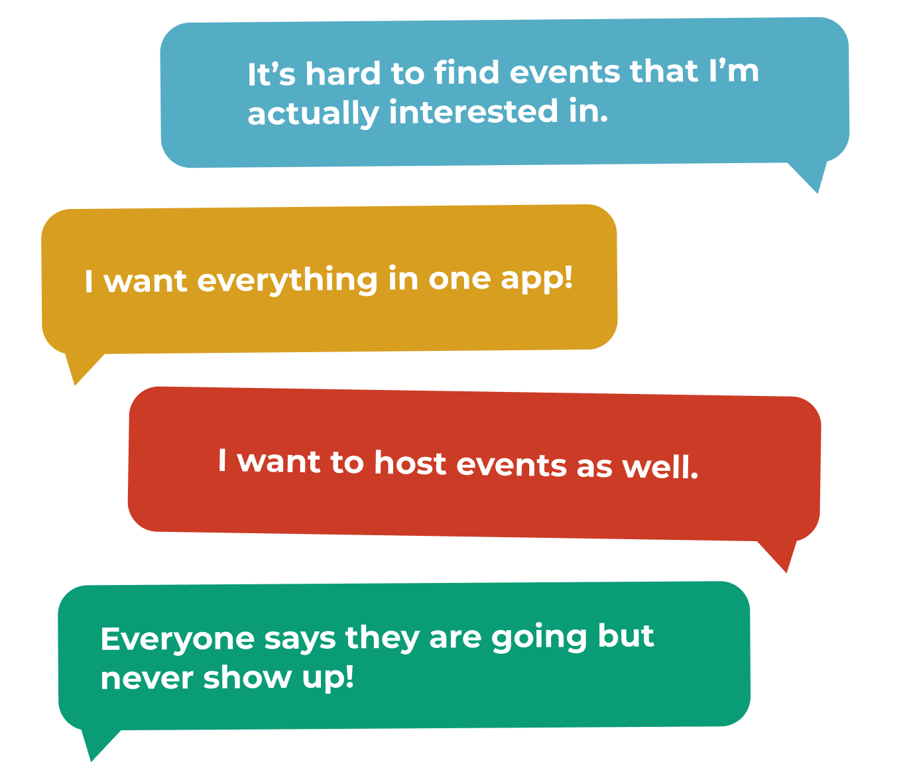
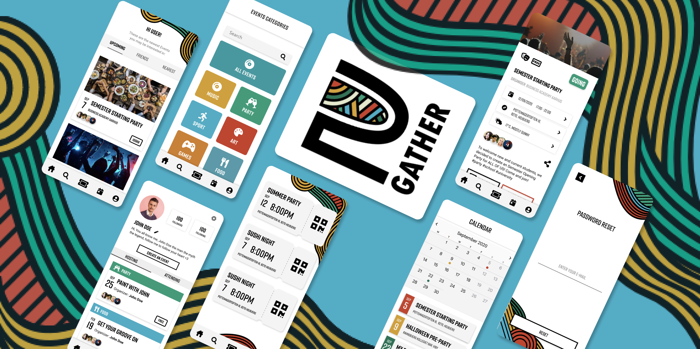

2Gather
Group Project, App Development
Programming
UX Design
UI Design

Visual Studio Code

HTML

CSS

Javascript

Firebase

Adobe Xd
For this project we were tasked with creating Single Page Application with a topic of our own choice using the Firebase database. This solution was programmed specifically as an App so it is not web responsive.
Jump to Solution

Download Report

Intro
A FULLY FUNCTIONING APP IN A MONTH?
After a period of brainstorming we all agreed on developing an Event App, seeing as it was a perfect option as a CRUD App using Firebase. Since we only had one month from kick off till hand in we were aware our time frame was short and because a polished product was not the purpose of this project our goal was to get as much learnings from the process as possible.

Problems & Solutions
WE SOLVED IT EVENT-UALLY
Overall the biggest complaint we received about existing “Event Apps” was the lack of personalisation of the newsfeed. To remedy this we came up with the solution of having all the categories appear after the “sign-up” phase and allow the user to choose the categories of their preference.
Users were also particularly interested in seeing events that their friends are attending, therefore we made the homepage filterable by “Upcoming”, “Nearest” and “Friends”
We also implemented a push notification or pop-up window 24 hours before the event starts, asking users to either confirm or deny their attendance, making it easier for both friends and organizers to have a realistic idea of who and how many people are actually coming.
Users were also particularly interested in seeing events that their friends are attending, therefore we made the homepage filterable by “Upcoming”, “Nearest” and “Friends”
We also implemented a push notification or pop-up window 24 hours before the event starts, asking users to either confirm or deny their attendance, making it easier for both friends and organizers to have a realistic idea of who and how many people are actually coming.
Design Guide
TO-GATHER TO-GETHER
Since we want to be able to make as much of our solution as functionable as possible our focus was on programming and therefore design was not our primary objective. That being the case we still designed a logo and style guide to go along with our product. The logo 2Gather was a play on words “ To gather together” and we used multiple highlight colors to differentiate the different event categories.

Developing & Programming
PROGRAMMING OUR SOLUTION
As mentioned previously we spent most of the period of this project programming. We used firebase as the database, for the users accounts and events. We divided the tasks we wanted completed between ourselves making sure to help each other along the way. My primary focus during this project was to get the home page up and running, this included making the entire database of events functionable. Having a collection of events with all the necessary fields, such as date, name, genre, description, location and more. As well making the home page filterable by upcoming and location. As a team we also accomplished making the login function and creating an event - adding it to the already existing database, thereby fulfilling almost all the necessities of a CRUD application, create, read, update and delete.
Take Aways
HARD WORK AND DEDICATION
This was by far the longest amount of time any group of mine worked overtime. Even though it was our first project using firebase we were adamant to create a functioning solution. We were extremely proud of our achievement in the end, even if we wished we could have polished up the user interface. We worked very well together as a team and managed to push past the boundaries of our knowledge through hard work, determination, documentation and a little help from our professor.
Similar projects